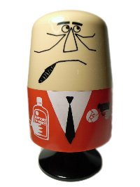
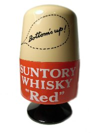
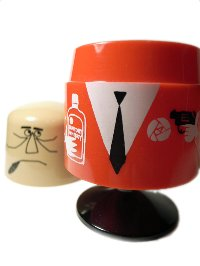
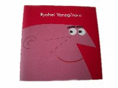
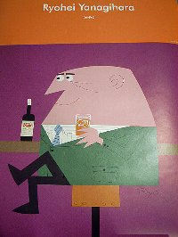

|
collection |
アンクルトリストリスウィスキー アンクルトリス爪楊枝入れ  後姿。
この爪楊枝入れは、昭和30年代ごろに全国にあったサントリー 
拳銃を持っています。復刻版はウィスキー入りグラスに変わっています。 柳原良平 『Ryohei Yanagihara』 DANぼ 2003
アンクルトリスやその他の作品集です。CMも収録されています。 『Ryohei Yanagihara』のポスター 番外編のおまけ大好きな（笑）天神さんで偶然発見したトリスのジュースラベル。
どれもオレンジジュースなのですが、味は同じだったのかな？ 最終更新 2009.04.14 2008-2009  なないろまーぶる なないろまーぶる
当サイトの画像および文章の無断転載はお断りいたします。 |